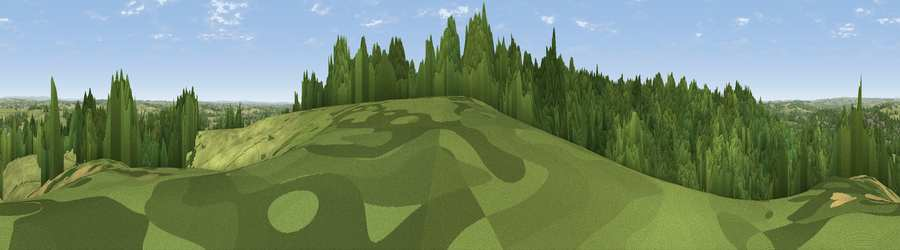

Viewpoint near Bishton
#21488 in England · top 20% of its area beats it · near BishtonThe view, rendered

A 360° render of this exact spot computed from the terrain model, tree cover and land cover — summer colours, afternoon light, calibrated against photographs of famous viewpoints. Real trees, hedges and buildings will differ in detail.
The panorama
Grey silhouette: terrain skyline in each direction (720 bearings, Earth curvature and refraction included). Dashed green: skyline with trees (+15 m) and buildings (+8 m) as obstacles. Blue strip: how far the ground is visible on each bearing.
Where the view opens
Wedge length = distance to the farthest visible ground on that bearing (vegetation-aware). Rings at 10, 25 and 50 km.
What fills the view
47% grassland · 46% woodland · 5% cropland · 2% built-up
Angular shares of the visible panorama (visual magnitude), not map area. Landscape diversity 0.41 (0–1 Shannon).
Key numbers
More beautiful places nearby
The staircase of upgrades: each row has a higher view potential than everything closer. Driving times are estimates from straight-line distance, calibrated against real road routing — check an actual route before setting out.
| Place | Direction | Drive | Score |
|---|---|---|---|
| Viewpoint near Slitting Mill | SE · 2 km | ~5 min | 52.4 |
| Viewpoint near Brereton | SE · 5 km | ~11 min | 52.5 |
| Viewpoint near Upper Longdon | SSE · 6 km | ~13 min | 55.9 |
| Viewpoint near Huntington | SSW · 8 km | ~16 min | 60.2 |
| Wimblebury Hill | S · 9 km | ~17 min | 62.0 |
| Viewpoint near Streetly | SSE · 23 km | ~38 min | 69.5 |
| Viewpoint near Wootton | NNE · 28 km | ~44 min | 74.4 |
| Viewpoint near Wootton | NNE · 28 km | ~44 min | 74.8 |
52.77646, -1.98106 · source: screening · position refined by local search. Computed location — check access rights before visiting.